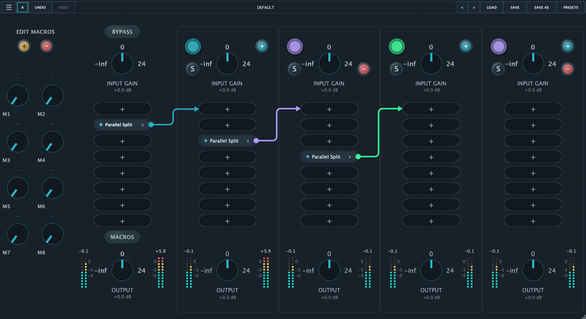

Build a compact serial path with plugins, per-slot bypass, input gain, master volume, and stereo meters.
Hostr
A JUCE audio rack for building serial chains, parallel splits, and nested routing inside a single insert, without multiplying buses and tracks in your DAW.
macOS
Windows
Linux
VST3 | AU | Standalone
Beta
Structure
Hostr hosts AU, VST3, and VST2 effects inside an 8-slot master chain. Each slot can become a Parallel Split, and each split can contain other chains, more plugins, and another nested split.
Duplicate the signal across independent branches, sum the returns, and place splits inside other branches when richer routing is needed.
8 macros can be mapped to hosted plugin parameters, including inside parallel paths, so you can control the rack from your DAW.
.hostrpreset files save plugins, binary state, macro mappings, split topology, gain, solo, mute, and bypass.
Move plugins between the master chain and parallel branches while preserving hosted state and updating the audio graph connections.
The indexed library speeds up local plugin search; skins change the rack's visual character without changing the workflow.
Plugin interface

Download
The page follows the direct model of open source audio projects: installers are immediately visible, followed by quick instructions for installing, testing, and rebuilding.
.zip package for macOS Arm CPU.
.zip package for macOS Intel CPU.
.zip package for Windows.
Beta Testers Survey
If you try Hostr, please report any bugs by answering a few questions in the beta testers survey.
Open the Beta Testers surveyAudio flow
The split copies the input buffer, so every chain starts from the same audio material.
Each chain applies input gain, its internal graph, output gain, mute, solo, and metering.
A nested split behaves like a branch node: it processes its own branches and returns an already summed buffer.
Active branches are realigned, summed, and handed back to the master chain before the master volume.
For developers
PluginProcessor.cpp manages the master graph, scanner, macros, presets, and main processing. ParallelSplitProcessor.cpp manages chains, nested splits, latency, and branch summing.
Open Hostr.jucer with Projucer, regenerate the exporter for your platform, and build with Xcode, Visual Studio, or the Linux build system.